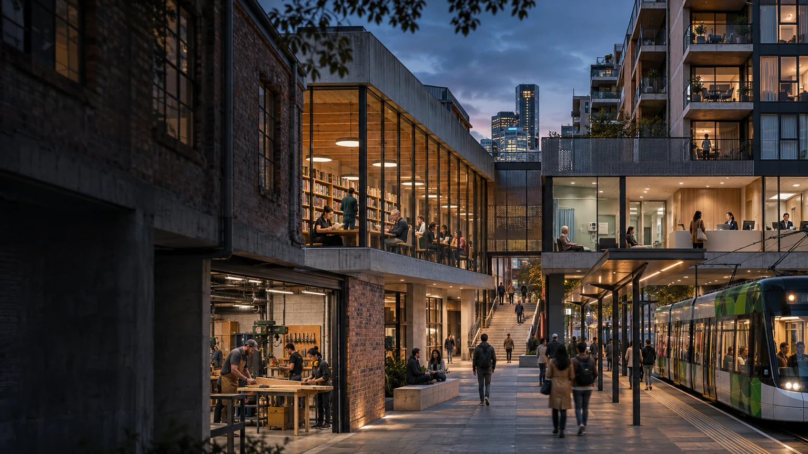
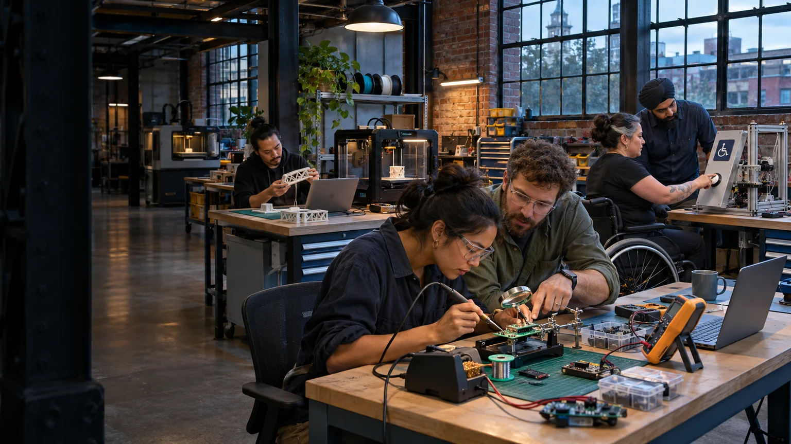

Exploring a civic establishment
Where useful
things meet.
Select a few activities and explore the rooms, equipment and support they might share.
System in development · Brisbane · 8 November 2026
A connected urban precinct imagined as one place with many useful relationships. AI-generated concept image.
Image credit ↗Try a combination
Which activities could share something useful?
The wider Aura body of work is much larger than one building, and the whole system remains in development. Choose developing ideas to compare an illustrative mapping of possible room and equipment use. The selections and resource matches are discussion aids, rather than a confirmed programme or floor plan.
Possible shared resources
Choose activities to explore potential room and equipment overlaps.
Begin with the common asset
Overlap has to make life easier.
A classroom can support teacher development, enterprise learning and volunteer preparation. A media studio can record a skilled installation, produce cultural work and help a young person complete a creative project. A quiet room can host a booked mentoring conversation at another time.
The shared asset earns its place through those uses. What would change between uses? Which equipment could stay in the room, and what would make sharing practical for the people involved?

Activity-specific arrangements
Some overlaps need a different room or timetable.
| Activity relationship | What the brief examines |
|---|---|
| Children, families and adult members | Suitable hosts, activity boundaries, arrivals, departures and use of shared routes. |
| Quiet support and active making | Privacy, acoustic separation, room setup and neighbouring bookings. |
| Computing and public learning | An engineered equipment area connected with an accessible teaching and development space. |
| Everyday events and resilience exercises | Clear exercise material, current information sources and an identified receiving service. |
| Research and general participation | A defined study, qualified partners, appropriate facilities and a distinct participant agreement. |
The adult Genesis material explores a separate technical and clinical facility concept. Its presence in the archive keeps that option visible; selecting ordinary teaching or support activities does not add a chamber installation to this building brief.
A federation in a shared place
Organisations can cooperate through clear arrangements.
Ready SET Co-op, enterprise programmes, existing providers, technical businesses, creative groups and public partners can each bring a distinct contribution. The host, landlord, asset owner, service operator and financing vehicle may be different participants.
A useful combination identifies those relationships, the shared costs and the benefits each party receives. Personal Auras remain the property of their people, and cultural authority remains with the relevant people and custodians.
Explore the wider federation and project connections →